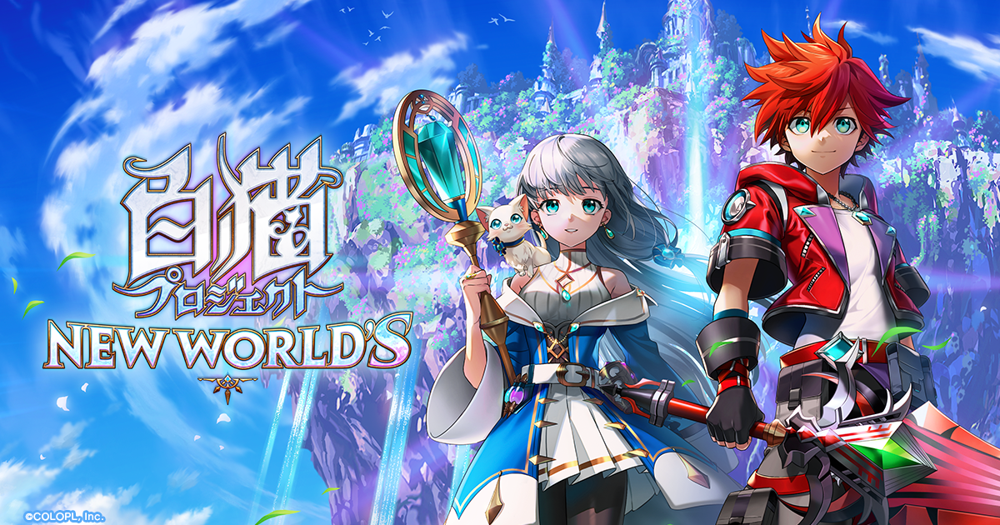
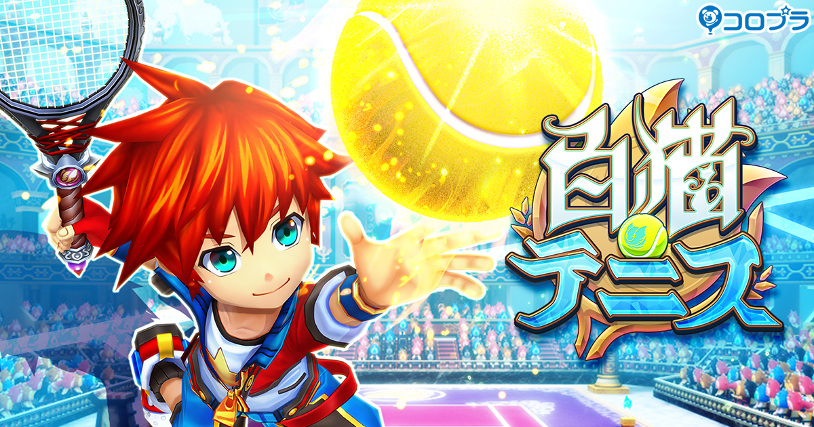
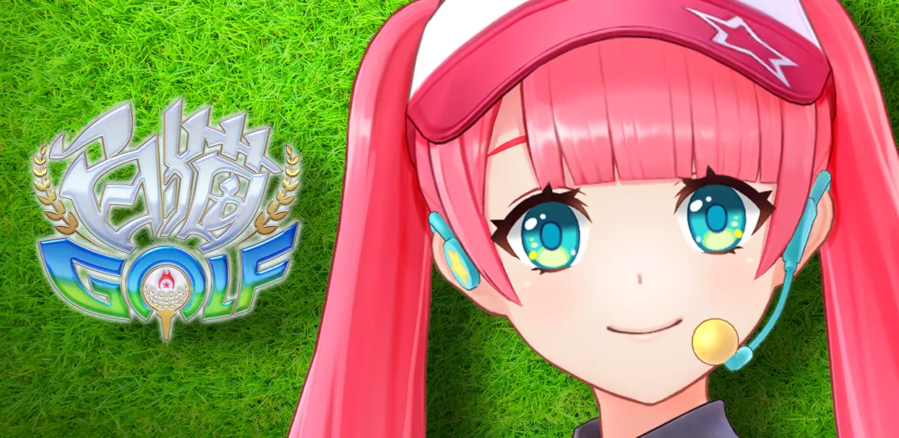
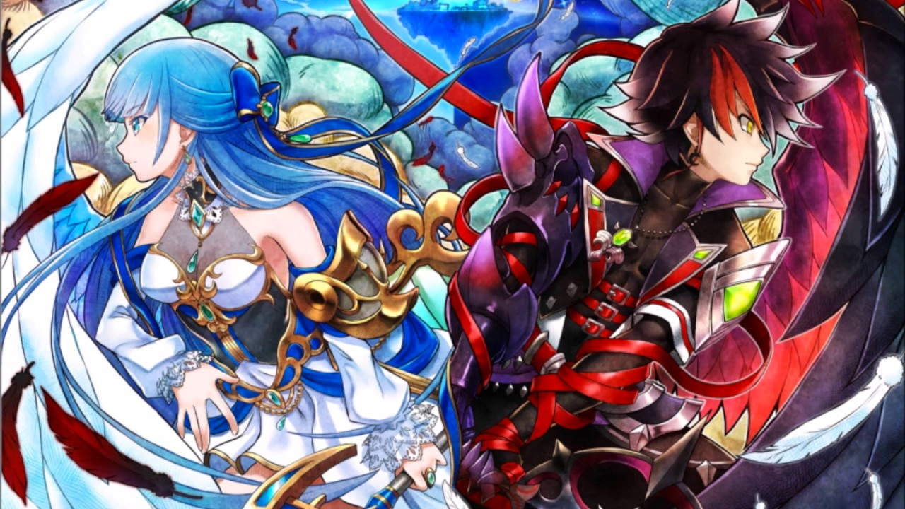

Page d'accueil
Shironeko Project
Différence entre TW et JP
Liste des classes
Liste des éléments
Liste des types
Guide FR des menus dans le jeu
Guide FR des classes
Shironeko Tennis
Différent types de services
Différent types de tir
Les principaux types de terrain
Différent types de spécialisation
Les types d'équipements
Liste des personnages
Shironeko Golf
Liste des personnages
Liste des clubs
   